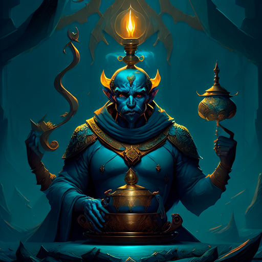

Hello, My Name is Joshua Michalik
Ready for any challenge! With over Ten years of programming experience in C++, C#, Java, Python, HTML, CSS, and
JavaScript.
With 10+ years of Unity experience and 1.5+ years of Unreal Engine experience. Let's code the future of Games
together!
Dreamer by day, gamer by night. Creating video game as if by magic.
I'm currently attending Trios College for Video Game Design & Programming and learning C++, C#, Maya, Unity, and
Unreal Engine.
Join me on my journey as I learn and create! Let's make some video game magic! Crafting immersive worlds one game
at a time. Join me on my mission to create and save the world from the void with my open world RPG sandbox game!
SKILLS
C++, C#: I have used both of these languages to make small prototype games, ranging from a text-based adventure to a 3D grappling-based game.
HTML, CSS: I have used these to create the website you're currently viewing.
Unreal Engine: I have used up to version 4.27 and have about a year and a half of experience working with its built-in blueprints and using C++ to create my own scripts.
Unity: I have over ten years of experience in this game engine. I have created several small prototypes for mechanics, such as a grappling hook swinging game where you try to move from point to point in a set time, a Call of Duty zombie-styled survival game, and my favorite, a small survival game prototype that included a player manager, inventory, stats, crafting, enemies, and object placement in the world.
My Social Links